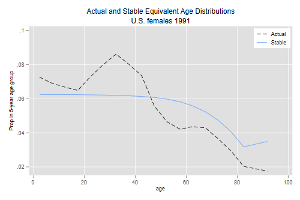
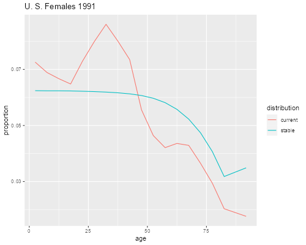

<h2 id="stable-populations">Stable Populations</h2>
<p>In this unit we do some stable population calculations, including
determination of the intrinsic growth rate, as illustrated in Box 7.1,
and computing the stable equivalent age distribution, as illustrated in
Box 7.2 in the textbook.</p>

{% include srtabs.html %}

<h3 id="the-population-of-egypt">The Population of Egypt</h3>
<p>We showed in the previous unit how to calculate <em>r</em> from the
first eigenvalue of the Leslie Matrix. We now use the Egyptian example
in Box 7.1 to illustrate Coale’s method. We start by entering
person-years lived for ages 15-19 to 45-49, the maternity function at
those ages, and the midpoints of the age groups.</p>
<pre class='stata'>. mata:
───────────────────────────────────────────────── mata (type end to exit) ──────
:   L = (4.66740, 4.63097, 4.58518, 4.53206, 4.46912, 4.39135, 4.28969)

:   m = (0.00567, 0.06627, 0.11204, 0.07889, 0.05075, 0.01590, 0.00610)

:   a = (15,20,25,30,35,40,45) :+ 2.5

: end
────────────────────────────────────────────────────────────────────────────────
</pre>
<pre class='r'>> L &lt;- c(4.66740, 4.63097, 4.58518, 4.53206, 4.46912, 4.39135, 4.28969)
> m &lt;- c(0.00567, 0.06627, 0.11204, 0.07889, 0.05075, 0.01590, 0.00610)
> a &lt;- c(15, 20, 25, 30, 35, 40, 45) + 2.5
</pre>
<h4 id="the-net-reproduction-ratio">The Net Reproduction Ratio</h4>
<p>The Net Reproduction Ratio NRR is easily computed as the sum of the
products of the survival ratios and the maternity function:</p>
<pre class='stata'>. mata:
───────────────────────────────────────────────── mata (type end to exit) ──────
: nrr = sum( L :* m )

: nrr
  1.527413734

: end
────────────────────────────────────────────────────────────────────────────────
</pre>
<pre class='r'>> nrr &lt;- sum(L * m)
> nrr
[1] 1.527414
</pre>
<p>The NRR is 1.527 daughters per woman, in agreement with the
textbook.</p>
<h4 id="coales-method-for-estimating-r">Coale’s Method for Estimating
r</h4>
<p>Next we solve Lotka’s equation. The first thing we need is a little
function <em>f(r)</em> to compute a discrete approximation to Lotka’s
integral (equation 7.10b in the text). We then use Coale’s method, which
approximates the first derivative <em>f’(r)</em> as minus the product of
the function and the true mean age of childbearing in the stable
population <em>A</em>, which of course is not known, so we use an
estimate. The code below starts from <em>r = log(NRR)/A</em> with <em>A
= 27</em>.</p>
<pre class='stata'>. capture mata mata drop f()

. capture mata mata drop coale()

. mata:
───────────────────────────────────────────────── mata (type end to exit) ──────
:   function f (real scalar r, real vector a, real vector L, real vector m) {
>     return(sum(exp(-r:* a) :* L :* m))
>   }

:   function coale(nrr, a, L, m) {
>     r = log(nrr)/27
>     delta = 1
>     while (delta > 1e-8) {
>       r0 = r
>       f0 = f(r0, a, L, m)
>       r = r0 + (f0 - 1)/27
>       delta = abs(r - r0)
>       printf(" %10.8f\n", r)
>     }
>   return(r)
>   }

:   coale(nrr, a, L, m)
 0.01414625
 0.01425317
 0.01424322
 0.01424413
 0.01424405
 0.01424406
  .0142440581

: end     
────────────────────────────────────────────────────────────────────────────────
</pre>
<pre class='r'>> f &lt;- function(r, a, L, m) {
+   sum(exp(-r * a) * L * m)
+ }
> coale &lt;- function(nrr, a, L, m) {
+   r &lt;- log(nrr)/27
+   delta &lt;- 1
+   while(delta > 1e-8) {
+     r0 &lt;- r
+     f0 &lt;- f(r0, a, L, m)
+     r &lt;- r0 + (f0 - 1)/27
+     delta &lt;- abs(r - r0)
+     cat(r,"\n")     
+   }
+   r
+ }
> coale(nrr, a, L, m)
0.01414625 
0.01425317 
0.01424322 
0.01424413 
0.01424405 
0.01424406 
[1] 0.01424406
</pre>
<p>After three iterations we agree with the textbook and after six the
rate of growth changes by less than 1e-8.</p>
<p>An alternative is to use Newton’s method by calculating the exact
first derivative, which I do below by writing a short function
<em>g(r)</em>. With the same starting value</p>
<pre class='stata'>. capture mata mata drop g()

. capture mata mata drop newton()

. mata:
───────────────────────────────────────────────── mata (type end to exit) ──────
: function g(r, a, L, m) {
>   return( -sum(a :* exp(-r :* a) :* L :* m) )
> }

: function newton(nrr, a, L, m) {
>   r = log(nrr)/27
>   delta = 1
>   while(delta > 1e-8) {
>     r0 = r
>     f0 = f(r0, a, L, m)
>     g0 = g(r0, a, L, m)                      
>     r = r0 + (1 - f0)/g0
>     delta = abs(r - r0)
>     A = -g0/f0
>     printf("%10.8f  %10.4f\n", r, A)  
>   }
>   return(r)
> }

: r = newton(nrr, a, L, m)
0.01421160     29.4198
0.01424404     29.4737
0.01424406     29.4725
0.01424406     29.4725

: end
────────────────────────────────────────────────────────────────────────────────
</pre>
<pre class='r'>> g &lt;- function(r, a, L, m) {
+   -sum(a * exp(-r * a) * L * m)
+ }
> newton &lt;- function(nrr, a, L, m) {
+   r &lt;- log(nrr)/27
+   delta &lt;- 1
+   while(delta > 1e-8) {
+     r0 &lt;- r
+     f0 &lt;- f(r0, a, L, m)
+     g0 &lt;- g(r0, a, L, m)  
+     r &lt;- r0 + (1 - f0)/g0
+     delta &lt;- abs(r - r0)
+     A &lt;- -g0/f0
+     cat(r,A,"\n")  
+   }
+   data.frame(r=r, A=A)
+ }
> newton(nrr, a, L, m)
0.0142116 29.41982 
0.01424404 29.47367 
0.01424406 29.47248 
0.01424406 29.47248 
           r        A
1 0.01424406 29.47248
</pre>
<p>Newton converges a bit quicker, in only four iterations, and as a
bonus we get the mean age of childbearing in the stable population,
which is 29.47.</p>
<p>Lotka used a quadratic expansion to obtain an approximate solution
that does not require iteration.</p>
<h3 id="the-population-of-the-u.s.">The Population of the U.S.</h3>
<p>Let us now turn to the example in Box 7.2, which involves the female
population of the U.S. in 1991. The data include the actual age
distribution as well as the person-years lived and the maternity
function. These are available in a text file called
<code>prestonBox72.dat</code> in the datasets section.</p>
<pre class='stata'>. infile age ca L m using ///
>   https://data.princeton.edu/eco572/datasets/prestonBox72.dat, clear
(18 observations read)

. list

     ┌───────────────────────────────┐
     │ age      ca         L       m │
     ├───────────────────────────────┤
  1. │   0   .0726   4.95804       0 │
  2. │   5   .0689   4.95002       0 │
  3. │  10   .0667   4.94603   .0007 │
  4. │  15   .0648   4.93804   .0303 │
  5. │  20   .0729   4.92552   .0566 │
     ├───────────────────────────────┤
  6. │  25   .0799   4.91138   .0578 │
  7. │  30   .0861   4.89356   .0388 │
  8. │  35   .0801   4.86941   .0157 │
  9. │  40   .0735   4.83577   .0027 │
 10. │  45   .0556   4.78475   .0001 │
     ├───────────────────────────────┤
 11. │  50   .0464   4.70374       0 │
 12. │  55   .0421   4.57712       0 │
 13. │  60   .0436   4.38502       0 │
 14. │  65   .0429   4.10756       0 │
 15. │  70   .0365    3.7199       0 │
     ├───────────────────────────────┤
 16. │  75   .0294   3.19192       0 │
 17. │  80   .0203   2.49203       0 │
 18. │  85   .0176   2.73044       0 │
     └───────────────────────────────┘
</pre>
<pre class='r'>> box72 &lt;- read.table("https://data.princeton.edu/eco572/datasets/prestonBox72.dat",
+   header=FALSE)
> names(box72) &lt;- c("age", "ca", "L", "m")
> box72
   age     ca       L      m
1    0 0.0726 4.95804 0.0000
2    5 0.0689 4.95002 0.0000
3   10 0.0667 4.94603 0.0007
4   15 0.0648 4.93804 0.0303
5   20 0.0729 4.92552 0.0566
6   25 0.0799 4.91138 0.0578
7   30 0.0861 4.89356 0.0388
8   35 0.0801 4.86941 0.0157
9   40 0.0735 4.83577 0.0027
10  45 0.0556 4.78475 0.0001
11  50 0.0464 4.70374 0.0000
12  55 0.0421 4.57712 0.0000
13  60 0.0436 4.38502 0.0000
14  65 0.0429 4.10756 0.0000
15  70 0.0365 3.71990 0.0000
16  75 0.0294 3.19192 0.0000
17  80 0.0203 2.49203 0.0000
18  85 0.0176 2.73044 0.0000
</pre>
<h4 id="eigenanalysis-of-the-leslie-matrix">Eigenanalysis of the Leslie
Matrix</h4>
<p>The first step will be to construct a Leslie matrix and compute the
first eigenvalue and eigenvector. For this purpose we source again the
code we used in the population projection log.</p>
<pre class='stata'>. capture mata mata drop Leslie()

. quietly do https://grodri.github.io/demography/leslie.mata

. mata:
───────────────────────────────────────────────── mata (type end to exit) ──────
:   L = st_data(.,"L")

:   m = st_data(.,"m")

:   M = Leslie(L, m)

:   values = J(0, 0, .)

:   vectors = J(0, 0, .)

:   eigensystem(M, vectors, values)

:   values[1]
  .99916795

:   log(values[1])/5
  -.000166479

:   sa = Re(vectors[,1]/sum(vectors[,1]))

: end
────────────────────────────────────────────────────────────────────────────────
</pre>
<pre class='r'>> source("https://grodri.github.io/demography/leslie.R")
> M &lt;- Leslie(box72$L, box72$m)
> e &lt;- eigen(M)
> Re(e$values[1])
[1] 0.999168
> log(Re(e$values[1])/5)
[1] -1.61027
> sa &lt;- Re(e$vectors[,1])
> sa &lt;- sa/sum(sa)
</pre>
<p>The intrinsic rate of growth of the U.S. in 1991 was <em>r =
-0.0001665</em>. If the observed fertility and mortality patterns were
to prevail, the population of the U.S. would eventually decline about
0.017% per year.</p>
<h4 id="estimating-r-using-coales-method">Estimating r using Coale’s
Method</h4>
<p>Let us now calculate the rate using Coale’s method to solve Lotka’s
equation iteratively. We start by computing the NRR, which as you would
expect is less than one. We also need the midpoints of the age groups.
For the last group we use 6.79, life expectancy at age 85, as in the
textbook</p>
<pre class='stata'>. mata
───────────────────────────────────────────────── mata (type end to exit) ──────
:  nrr = sum( m :* L )

:  nrr             
  .995601948

:  a = range(0,85,5) :+ 2.5

:  a[18] = 85 + 6.79

:  coale(nrr, a, L, m)
 -0.00016642
 -0.00016648
 -0.00016648
  -.0001664824

: end
────────────────────────────────────────────────────────────────────────────────
</pre>
<pre class='r'>> library(dplyr)
> nrr &lt;- sum(box72$m * box72$L)
> box72 &lt;- mutate(box72, a = ifelse(age &lt; 85, age + 2.5, 85 + 6.79))
> coale(nrr, box72$a, box72$L, box72$m)
-0.0001664199 
-0.0001664812 
-0.0001664824 
[1] -0.0001664824
</pre>
<p>As you can see, the method settles on r = -0.0001665, in agreement
with the earlier result. Let us try using the exact first derivative</p>
<pre class='stata'>. mata
───────────────────────────────────────────────── mata (type end to exit) ──────
:   r = newton(nrr, a, L, m)
-0.00016648     26.4788
-0.00016648     26.4789

: -    end
'end' found where almost anything else expected
r(3000);
</pre>
<pre class='r'>> n &lt;- newton(nrr, box72$a, box72$L, box72$m)
-0.0001664826 26.47876 
-0.0001664824 26.47888 
> r &lt;- n$r
</pre>
<p>The method converges very quickly and gives a mean age of
childbearing in the stable population of 26.479. Note that there is a
typo in the textbook, which reports <em>r</em> as -.00018 on page
150.</p>
<h4 id="obtaining-the-equivalent-age-distribution">Obtaining the
Equivalent Age Distribution</h4>
<p>The final step will be to calculate the stable equivalent age
distribution. This is a simple function of <em>r</em> and the
person-years lived. (It also involves the birth rate, but that is also a
function of <em>r</em> and person-years lived.) Below we compute
<em>b</em> and then the stable age distribution, which we compare to the
eigenvector</p>
<pre class='stata'>: mata:
>   b = 1/sum( exp(-r*a) :* L )

:   b
  .012584262

:   saa = b * exp(-r*a) :* L        

:   st_store(.,st_addvar("float","sa"), sa)

:   st_store(.,st_addvar("float","saa"), saa)

: end
────────────────────────────────────────────────────────────────────────────────

. list age ca sa saa      

     ┌───────────────────────────────────┐
     │ age      ca         sa        saa │
     ├───────────────────────────────────┤
  1. │   0   .0726   .0624188   .0624192 │
  2. │   5   .0689   .0623698   .0623702 │
  3. │  10   .0667   .0623714   .0623718 │
  4. │  15   .0648   .0623225   .0623229 │
  5. │  20   .0729   .0622162   .0622167 │
     ├───────────────────────────────────┤
  6. │  25   .0799   .0620893   .0620897 │
  7. │  30   .0861   .0619155   .0619159 │
  8. │  35   .0801   .0616613   .0616617 │
  9. │  40   .0735   .0612863   .0612867 │
 10. │  45   .0556   .0606902   .0606906 │
     ├───────────────────────────────────┤
 11. │  50   .0464   .0597123   .0597127 │
 12. │  55   .0421   .0581533   .0581537 │
 13. │  60   .0436    .055759   .0557594 │
 14. │  65   .0429   .0522744   .0522748 │
 15. │  70   .0365   .0473803   .0473806 │
     ├───────────────────────────────────┤
 16. │  75   .0294   .0406893   .0406896 │
 17. │  80   .0203   .0317938   .0317941 │
 18. │  85   .0176   .0348964   .0348897 │
     └───────────────────────────────────┘
</pre>
<pre class='r'>> b &lt;- 1/sum(exp(-r * box72$a) * box72$L)
> b
[1] 0.01258426
> saa &lt;- b * exp(-r * box72$a) * box72$L
> cbind(box72$ca, sa, saa)
                     sa        saa
 [1,] 0.0726 0.06241882 0.06241925
 [2,] 0.0689 0.06236975 0.06237018
 [3,] 0.0667 0.06237137 0.06237180
 [4,] 0.0648 0.06232247 0.06232290
 [5,] 0.0729 0.06221623 0.06221665
 [6,] 0.0799 0.06208928 0.06208971
 [7,] 0.0861 0.06191552 0.06191594
 [8,] 0.0801 0.06166127 0.06166169
 [9,] 0.0735 0.06128628 0.06128670
[10,] 0.0556 0.06069017 0.06069059
[11,] 0.0464 0.05971232 0.05971273
[12,] 0.0421 0.05815331 0.05815371
[13,] 0.0436 0.05575903 0.05575942
[14,] 0.0429 0.05227440 0.05227476
[15,] 0.0365 0.04738031 0.04738064
[16,] 0.0294 0.04068929 0.04068958
[17,] 0.0203 0.03179383 0.03179406
[18,] 0.0176 0.03489637 0.03488968
</pre>
<p>As you can see, the two calculations of the stable equivalent age
distribution give essentially the same result. Watcher’s textbook
explains why this is so.</p>
<p>Let us now plot the current and stable age distributions using the
midpoints of the age groups</p>
<pre class='stata'>. mata st_store(.,st_addvar("float","am"), a)

. line ca sa am, lpat(dash solid) ///
>   xtitle("age") ytitle(Prop in 5-year age group) ///
>   title(Actual and Stable Equivalent Age Distributions) ///
>   subtitle(U.S. females 1991) ///
>   legend(order(1 "Actual" 2 "Stable") col(1) ring(0) pos(1))

. graph export stablepop.png, width(500) replace
file stablepop.png saved as PNG format
</pre>
<p></p>
<pre class='r'>> library(tidyr)
> library(ggplot2)
> box72$sa &lt;- saa    
> g72 &lt;-  select(box72, age=a, current=ca, stable=sa) |> 
+   gather(key = "distribution", value= "proportion", -age)     
> ggplot(g72, aes(age, proportion, color=distribution)) + geom_line() +
+   ggtitle("U. S. Females 1991")
> ggsave("stablepopr.png", width = 500/72, height = 400/72, dpi = 72)
</pre>
<p></p>
<p>The graph reproduces Figure 7.4 in the textbook, showing how the 1991
age distribution has proportionately more people at younger ages (up to
40-44) and fewer at older ages (45-49 and up).</p>
<h4 id="a-preview-of-momentum">A Preview of Momentum</h4>
<p>The youthful U.S. agre structure means that, at 1991 rates, the U.S.
population would continue to grow for a while before it starts to
decline, so it has positive population momentum. How long would it grow
and what size would it reach? The following code snipet answers both
questions</p>
<pre class='stata'>. mata:
───────────────────────────────────────────────── mata (type end to exit) ──────
:   delta = 1

:   c0 = st_data(.,"ca")  // current age distribution

:   n=0

:   first = 1

:   while (delta > 1e-8) {
>     c1 = M * c0
>     r1 = log(sum(c1)/sum(c0))/5
>     delta = abs(r1-r)
>     n++
>     // print when pop first declines
>     if(r1 &lt; 0 &amp; first) {
>       n, sum(c1), r1, delta
>       first = 0
>     }
>     c0 = c1
>   }
                  1              2              3              4
    ┌─────────────────────────────────────────────────────────────┐
  1 │             9    1.138400994   -.0002235473    .0000570648  │
    └─────────────────────────────────────────────────────────────┘

:   n, sum(c1), r1
                  1              2              3
    ┌──────────────────────────────────────────────┐
  1 │            53    1.084463515   -.0001664865  │
    └──────────────────────────────────────────────┘

: end
────────────────────────────────────────────────────────────────────────────────
</pre>
<pre class='r'>> delta &lt;- 1
> c0 &lt;- box72$ca
> n &lt;- 0
> first &lt;- TRUE
> while (delta > 1e-8) {
+   c1 &lt;- M %*% c0
+   r1 &lt;- log(sum(c1)/sum(c0))/5
+   delta &lt;- abs(r1 - r)
+   n &lt;- n + 1
+   if(r1 &lt; 0 &amp; first) {
+     cat(n, sum(c1), r1, delta, "\n")
+     first &lt;- FALSE
+   }
+   c0 &lt;- c1
+ }
9 1.138401 -0.0002235473 5.706484e-05 
> data.frame(n, size = sum(c1), r1)
   n     size            r1
1 53 1.084464 -0.0001664865
</pre>
<p>We see that the population grows for 9 projection periods (45 years),
reaching a size 13.84% larger than in 1991, and then heads for
extinction, with the growth rate reaching -0.0001665 (to a close
approximation) after 56 projection periods (280 years), at which time it
is still 8.45% larger than at the start. (So extinction is not
imminent!)</p>
<p><em>Question</em>: On our way to the stable age distribution we
computed the intrinsic birth rate. What’s the intrinsic death rate?</p>
